拓展功能
关联Jupyter Notebook和conda的环境和包——“nb_conda”☆
① 安装
conda install nb_conda
执行上述命令能够将你conda创建的环境与Jupyter Notebook相关联，便于你在Jupyter Notebook的使用中，在不同的环境下创建笔记本进行工作。
② 使用
如果安装后，出现“error jupyter An error occurred while retrieving package information” 错误，可以参考error 文件夹下的相关文档。
- 可以在Conda类目下对conda环境和包进行一系列操作。
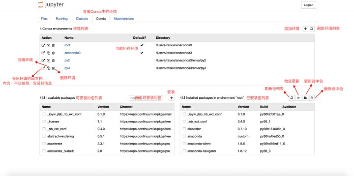
- 可以在笔记本内的“Kernel”类目里的“Change kernel”切换内核。
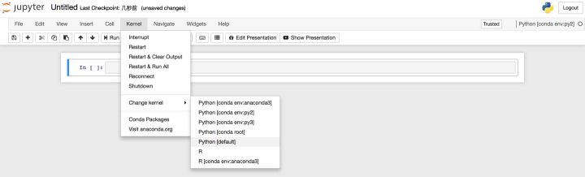切换内核
③ 卸载
conda remove nb_conda
执行上述命令即可卸载nb_conda包。
问题
如果出现“EnvironmentLocationNotFound: Not a conda environment: /Users/cookie/anaconda2/envs/anaconda2” 的问题， 参考，
查看已安装环境 “conda info -e ”
subl /Users/cookie/anaconda2/pkgs/nb_conda-2.2.1-py27_0/lib/python2.7/site-packages/nb_conda/envmanager.py
有的是在这个文件夹下：
anaconda_dir/pkgs/nb_conda-2.2.1-py36h8118bb2_0/lib/python3.6/site-packages/nb_conda/envmanager.py
Replace for env in info['envs']] with for env in info['envs'] if env != info['root_prefix']] in nb_conda/envmanager.py.
好像没什么用。
跟环境有关，第一个环境没问题， 第二个环境有问题。
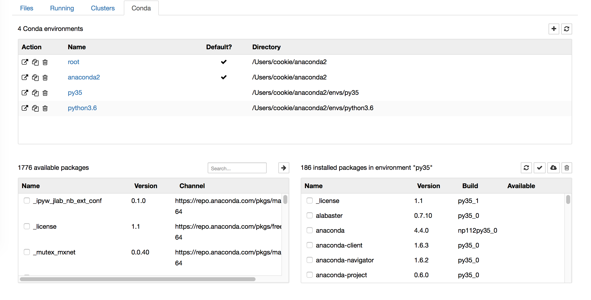
Markdown生成目录
- 不同于有道云笔记的Markdown编译器，Jupyter Notebook无法为Markdown文档通过特定语法添加目录，因此需要通过安装扩展来实现目录的添加。
conda install -c conda-forge jupyter_contrib_nbextensions
- 执行上述命令后，启动Jupyter Notebook，你会发现导航栏多了“Nbextensions”的类目，点击“Nbextensions”，勾选“Tableof Contents ⑵”

- 之后再在Jupyter Notebook中使用Markdown，点击下图的图标即可使用啦。
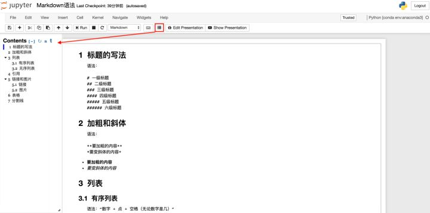
Markdown在文中设置链接并定位
在使用Markdown编辑文档时，难免会遇到需要在文中设定链接，定位在文档中的其他位置便于查看。因为Markdown可以完美的兼容html语法，因此这种功能可以通过html语法当中“a标签”的索引用法来实现。
语法格式如下：
[添加链接的正文](#自定义索引词)
<a id=自定义索引词>跳转提示</a>
注意：
-
- 语法格式当中所有的符号均是英文半角。
- “自定义索引词”最好是英文，较长的词可以用下划线连接。
- “a标签”出现在想要被跳转到的文章位置，html标签除了单标签外均要符合“有头（
<a>）必有尾（</a>）”的原则。头尾之间的“跳转提示”是可有可无的。 - “a标签”中的“id”值即是为正文中添加链接时设定的“自定义索引值”，这里通过“id”的值实现从正文的链接跳转至指定位置的功能。
例：
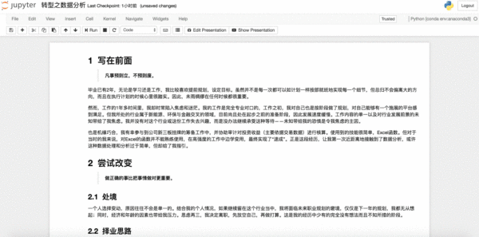
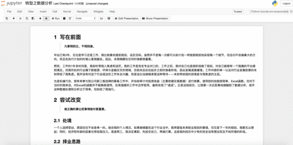
加载指定网页源代码
① 使用场景
想要在Jupyter Notebook中直接加载指定网站的源代码到笔记本中。
② 方法
执行以下命令:
%load URL
其中，URL为指定网站的地址。
③ 例
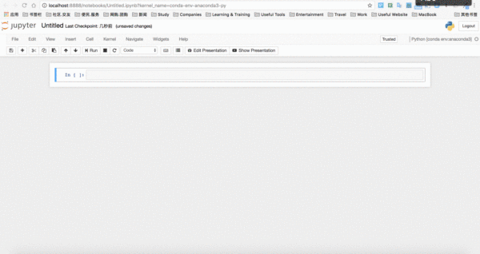
加载本地Python文件
① 使用场景
想在Jupyter Notebook中加载本地的Python文件并执行文件代码。
② 方法
执行以下命令：
%load Python文件的绝对路径
③ 注意
- Python文件的后缀为“.py”。
- “%load”后跟的是Python文件的绝对路径。
- 输入命令后，可以按
CTRL 回车来执行命令。第一次执行，是将本地的Python文件内容加载到单元格内。此时，Jupyter Notebook会自动将“%load”命令注释掉（即在前边加井号“#”），以便在执行已加载的文件代码时不重复执行该命令；第二次执行，则是执行已加载文件的代码。
④ 例

直接运行本地Python文件
① 使用场景
不想在Jupyter Notebook的单元格中加载本地Python文件，想要直接运行。
② 方法
执行命令：
%run Python文件的绝对路径
或
!python3 Python文件的绝对路径
或
!python Python文件的绝对路径
③ 注意
- Python文件的后缀为“.py”。
- “%run”后跟的是Python文件的绝对路径。
- “!python3”用于执行Python 3.x版本的代码。
- “!python”用于执行Python 2.x版本的代码。
- “!python3”和“!python”属于
!shell命令语法的使用，即在Jupyter Notebook中执行shell命令的语法。 - 输入命令后，可以按
control return来执行命令，执行过程中将不显示本地Python文件的内容，直接显示运行结果。
④ 例
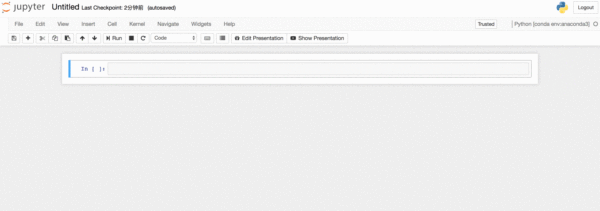
在Jupyter Notebook中获取当前位置
① 使用场景
想要在Jupyter Notebook中获取当前所在位置的绝对路径。
② 方法
%pwd
或
!pwd
③ 注意
- 获取的位置是当前Jupyter Notebook中创建的笔记本所在位置，且该位置为绝对路径。
- “!pwd”属于
!shell命令语法的使用，即在Jupyter Notebook中执行shell命令的语法。
④ 例
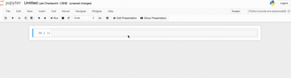
在Jupyter Notebook使用shell命令
① 方法一——在笔记本的单元格中
⑴ 语法
!shell命令
- 在Jupyter Notebook中的笔记本单元格中用英文感叹号“!”后接shell命令即可执行shell命令。
⑵ 例
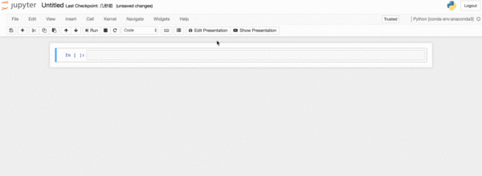
② 方法二——在Jupyter Notebook中新建终端
⑴ 启动方法
在Jupyter Notebook主界面，即“File”界面中点击“New”；在“New”下拉框中点击“Terminal”即新建了终端。此时终端位置是在你的家目录，可以通过pwd命令查询当前所在位置的绝对路径。
⑵ 关闭方法
在Jupyter Notebook的“Running”界面中的“Terminals”类目中可以看到正在运行的终端，点击后边的“Shutdown”即可关闭终端。
⑶ 例
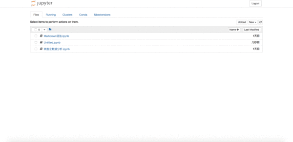
隐藏笔记本输入单元格
① 使用场景
在Jupyter Notebook的笔记本中无论是编写文档还是编程，都有输入（In []）和输出（Out []）。当我们编写的代码或文档使用的单元格较多时，有时我们只想关注输出的内容而暂时不看输入的内容，这时就需要隐藏输入单元格而只显示输出单元格。
② 方法一
⑴ 代码
from IPython.display import display
from IPython.display import HTML
import IPython.core.display as di # Example: di.display_html('<h3>%s:</h3>' % str, raw=True)
# 这行代码的作用是：当文档作为HTML格式输出时，将会默认隐藏输入单元格。
di.display_html('<script>jQuery(function() {if (jQuery("body.notebook_app").length == 0) { jQuery(".input_area").toggle(); jQuery(".prompt").toggle();}});</script>', raw=True)
# 这行代码将会添加“Toggle code”按钮来切换“隐藏/显示”输入单元格。
di.display_html('''<button onclick="jQuery('.input_area').toggle(); jQuery('.prompt').toggle();">Toggle code</button>''', raw=True)
在笔记本第一个单元格中输入以上代码，然后执行，即可在该文档中使用“隐藏/显示”输入单元格功能。
- 缺陷：此方法不能很好的适用于Markdown单元格。
⑵ 例
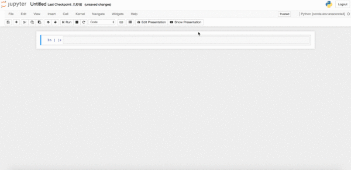
③ 方法二
⑴ 代码
from IPython.display import HTML
HTML('''<script>
code_show=true;
function code_toggle() {
if (code_show){
$('div.input').hide();
} else {
$('div.input').show();
}
code_show = !code_show
}
$( document ).ready(code_toggle);
</script>
<form action="javascript:code_toggle()"><input type="submit" value="Click here to toggle on/off the raw code."></form>''')
在笔记本第一个单元格中输入以上代码，然后执行，即可在该文档中使用“隐藏/显示”输入单元格功能。
- 缺陷：此方法不能很好的适用于Markdown单元格。
⑵ 例
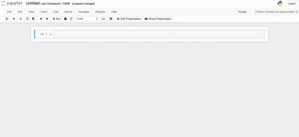
魔术命令
由于目前暂时用不到过多的魔术命令，因此暂时先参考官网的文档。